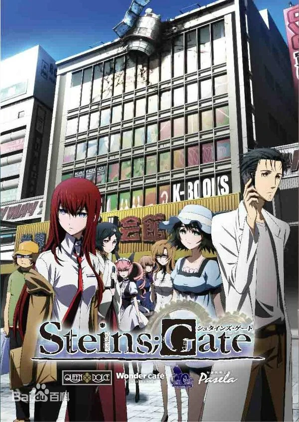

mfuns-player v3 测试
当前版本：
注：请尽量使用谷歌或者火狐内核的浏览器进行测试
【4月】命运石之门 【KFCX雪酷X曙光】
鲁迪钨丝
尘归尘，土归土
播放量：0 弹幕数：7.2w 2011-06-22 14:48:41

命运石之门
番剧
更新至12集 全24话
舞台是2010年夏的秋叶原。
无法摆脱中二病的大学生冈部伦太郎，成立了“未来道具研究所”，每天都生产出用途不明的发明。 但是，某日，偶然间发明出可以把电子讯息传送过去的时间机器。
抑制不住对世纪发明的兴奋，纯粹由于感兴趣而不断对过去进行干涉。结果，席卷世界的大悲剧降临在冈部等人的身上……
为了避免悲剧的发生，冈部的孤独的战斗开始了。
而他到底能否克服命运呢！？
原作：5pb./Nitroplus
动画制作：WHITE FOX
监督：佐藤卓哉、滨崎博嗣
系列构成：花田十辉
人物设定、总作画监督：坂井久太
机械设定：コレサワシゲユキ、中村和久
美术设定：金平和茂
美术监督：卫藤功二
色彩设计：佐藤美由纪
特殊效果：垣田由纪子
3DCG：相马洋
摄影监督：中村圭介
编辑：后藤正浩
音响监督：藤山房伸
音乐：阿保刚、村上纯
制作：未来道具研究所
假
装
我
是
个
评
论
区
假
装
我
是
个
评
论
区